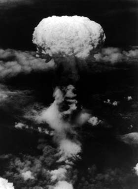

back to Paul's Poetry Page
back to Paul's Poetry Page|
the day I kissed you I almost forgot your longitude and latitude losing all sense of orientation at a critical juncture. the target was in view coordinates on paper and a cluster of lights in my field of vision. a flash and then the steep climb upward into the clouds where I could clearly taste the ashes on your lips. Paul David Mena 27 October, 1996 Acton, MA
|
 |
back to Paul's Poetry Page